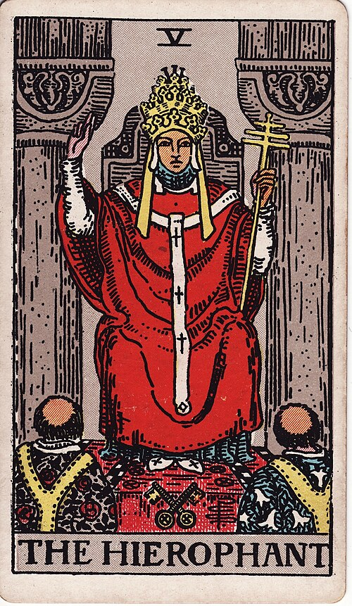
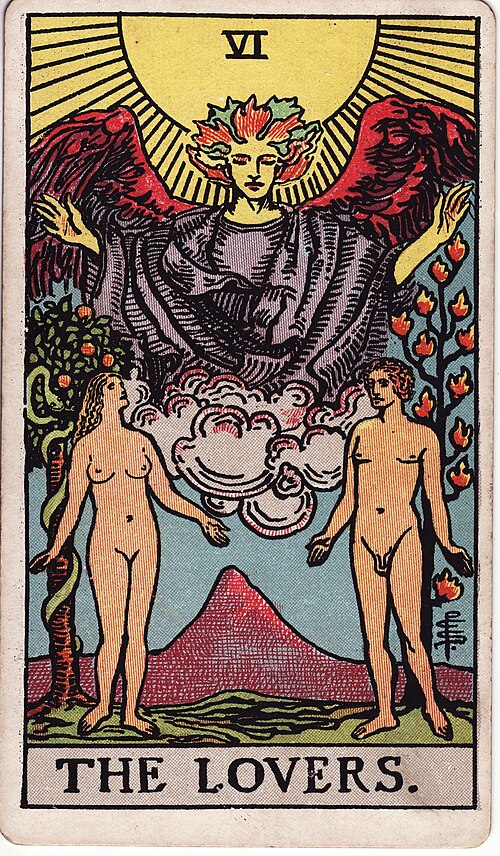
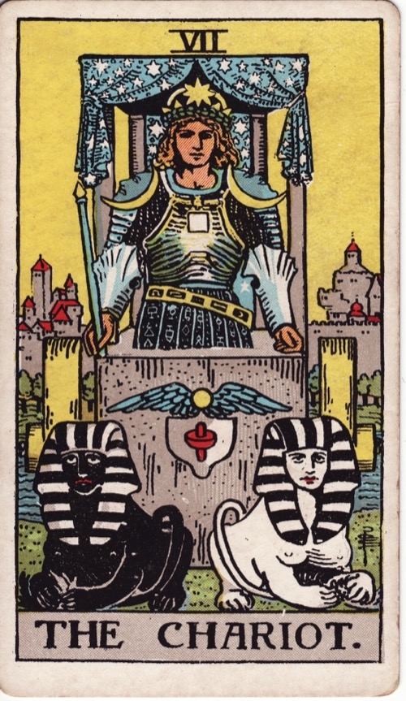

Lesson 12 · Tarot · 3 minutes
A higher trump number establishes game rank; it does not promise greater spirituality.
Explain the Pope–Lovers–Chariot sequence while distinguishing historical evidence from a useful interpretation.



The Pope represents a religious office held by a human being. Passing that card does not mean the sequence has left earthly life. Dummett's historical analysis groups social ranks first, then conditions of human life, then celestial and religious subjects, with the virtues moving between positions in different regional orders. Love and the triumphal chariot both belong among life's conditions (Dummett excerpts reproduced by Michael J. Hurst).
One plausible way to understand Love above the Pope is that desire affects people whatever office they hold. This is an interpretation of the arrangement, rather than a surviving explanation from its inventor. Lesson 8's parade explanation needs that qualification.
The Chariot depicts triumph, so its subject extends beyond the vehicle itself. One historical hypothesis connects this pair with Petrarch's Triumphs, where Chastity overcomes Love. Some early Chariots show a woman, but her identity is disputed; dynastic authority and Fame are other proposed readings. The connection is suggestive, not an established reason for VII following VI (Tarot Heritage's illustrated comparison).
Waite explicitly limits the Chariot's achievement to outward and rational conquest. He says its rider could not read the High Priestess's scroll or answer her questions. VII therefore does not imply greater spiritual understanding than II (The Pictorial Key, Part II, VII).
For your readings, you can remember these three as receiving inherited guidance, choosing a commitment, and pursuing it. This is a mnemonic supplied for this lesson, not a claim about why fifteenth-century cardmakers chose the order.
Lay out V, VI and VII. Explain aloud why a religious figure can precede an earthly victory. Then place II beside VII and recall Waite's example before checking below.
What does VII coming after II establish?
The number establishes game rank. Waite says the rider cannot answer the High Priestess's questions, so numerical order cannot establish spiritual superiority.
Read the primary source: Waite, The Pictorial Key, Part II, especially VII and its final paragraph. It documents Waite's interpretation of his deck, not the intentions of tarot's original makers.
Ask me about any transition that still feels inconsistent, or try explaining this one in your own words and I will check it.